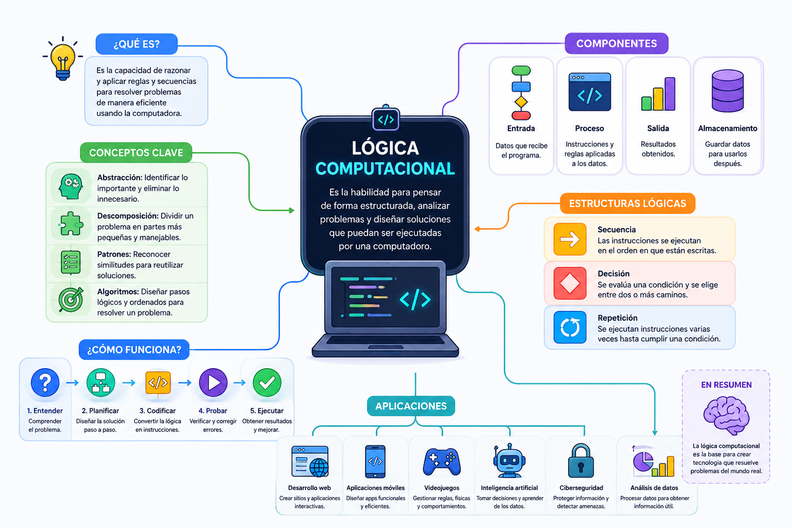

Imagina que quieres programar un robot para que prepare una taza de café de forma automática. El robot no tiene sentido común ni intuición; no sabe qué es una taza ni qué significa "hervir". Para lograrlo, debes descomponer la tarea en instrucciones tan detalladas, lógicas y ordenadas que una máquina sin mente pueda ejecutarlas sin cometer errores. Eso es exactamente un algoritmo: el mapa de navegación de cualquier sistema de software en el universo.
⚠️ Debes visualizar el video completo sin adelantar para desbloquear la evaluación.
Material audiovisual adaptado con fines estrictamente educativos. Créditos del autor: Qué es.

La lógica computacional es la estructura mental que permite abordar problemas de manera analítica, convirtiendo desafíos complejos en instrucciones precisas que una computadora pueda procesar eficazmente.
Según el texto de la lección, ¿para qué nos sirve la lógica computacional?
Si queremos programar un robot para que haga una taza de café, ¿por qué no podemos darle instrucciones generales o vagas?
Basado en el ejemplo del café, ¿qué es exactamente un algoritmo?
¿Qué significa que los pasos de un algoritmo deban ser "finitos"?
Cuando un algoritmo nos pide que las instrucciones sean "perfectamente definidas y sin ambigüedades", ¿qué nos quiere decir?
¿A qué se refiere la propiedad de "precisión" que se menciona en las ideas clave?
En la lectura se explica que dos algoritmos diferentes pueden resolver el mismo problema. ¿Cómo sabemos cuál de los dos es el mejor?
¿Qué recursos físicos de la computadora consume un algoritmo al ejecutarse y que debemos cuidar para que sea "eficiente"?
Si tuviéramos que explicarle de forma simple a un compañero qué es la "optimización del camino lógico", ¿cuál sería la respuesta correcta?
Completando el flujo lógico de la lección: Un conjunto finito de pasos secuenciales ordenados sirve para...